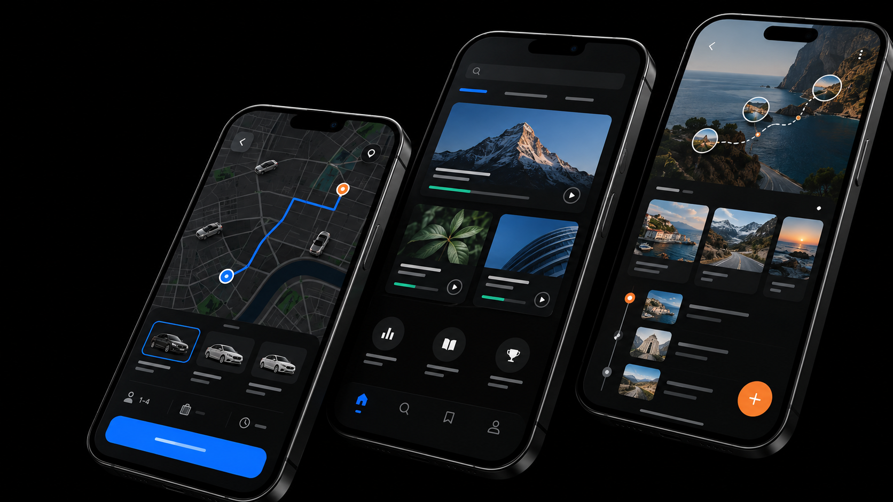

01 / Mobility
Go
Seamless
Sep–Dec 2022A safer, more dependable cab experience designed around availability, cancellations and commuter confidence.
UX researchMobile app

UX/UI Designer · Tamil Nadu, India
I’m Abishek Dominic, a designer focused on useful, intuitive digital experiences — from mobility and learning to the moments people want to remember.
01 / Selected work
Three concept projects exploring trust, access and memory across everyday digital experiences.
02 / About
I want to do strong work in a respectful team — turning real needs into experiences people can understand and trust.
Based in Tamil Nadu, India03 / Background
Professional and academic details currently visible on Abishek’s public LinkedIn profile.
Chennai, Tamil Nadu, India
User research, product structure and interface design.
Chennai, India
UXMINT Design
UXMINT Design · Credential CUIDMAY@2201
04 / Connect
For opportunities, collaboration or a closer look at the work, connect with Abishek on LinkedIn.
Open LinkedIn profile ↗